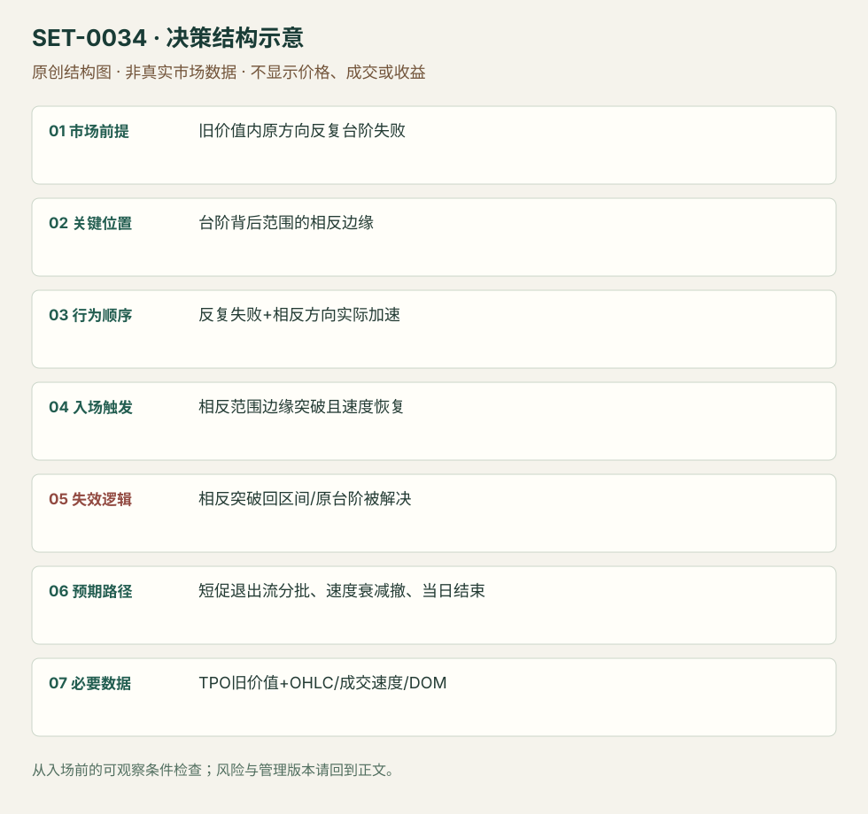

台阶久攻不破后的反向持仓退出
Failed Ledge Positioning Unwind · SET-0034 · reviewed · v1.0.0
盈利证据：not_established。审查范围与来源版本见第13节；未知字段保留缺失原因。
1. 名称与快速概览
台阶附近多次单方向尝试仍不能解决，价格困在旧价值内；当相反边缘被快速越过时，交易原方向持仓退出。与0033顺台阶解决的方向相反，目标和持有期待也不同。
记录口径：PA supporting；必要数据 TPO、OHLC、volume、DOM。名称性质：编辑性描述名，英文保留来源术语以便检索。reviewed 只表示本条规则与证据记录审查通过，盈利状态为 not_established。
2. 本质与行为假说
弱尝试中的仓位积累是作者解释，不能直接观测个体库存。可观察证据是多次失败、困在价值内、相反方向加速；短促反弹不能被误当长期新趋势。
3. 适用市场与环境
源例原油卖压被ledge反复挡住，旧价值内形成窄范围。若原方向终于被接受在台阶外，原持仓退出假说失效。
来源实用市场：原油期货。
Session：原油源图跨前后数据商日段，时区未标；本条限定当前执行session的机会和当日退出，不要求源图所有棒都属于纽约现金日。
跨市场：本版不主张已经验证的跨市场迁移；更换市场必须重定数据来源、流动性与session。
4. 出现前的观察清单
标未解决台阶、失败次数、旧价值边界与后续窄范围反向边缘；留每次失败时截图。不要用最终当天Profile称当时“旧价值”。
5. 形成过程与状态转换
原方向多次攻击失败 → 旧价值内范围收紧/停留 → 相反边缘被拿走且速度增加 → 原方向持仓可能退出 → 反弹减弱或回原趋势。
6. Entry trigger 与执行方式
来源用相反方向破位后的速度提升取得入口。编辑版将范围反向边缘越过与实际成交加速共同确认；不能在未越过时仅凭“空头多”抢反向。
7. Invalidation 与止损逻辑
反向破位失败、回到窄范围内部且重新接受；若原台阶被主动解决也否认本假说。具体硬保护为已知破位枢轴，而不是原大范围另一端。
8. Exit、target 与 trade management
第一轮退出冲击、旧价值另一参考或明显速度衰退处分批，偏短持有；源图随后重新跌，说明退出流不等于趋势反转。日内结束。
9. 常见 variations
买方多次攻高不成后向下撤仓对称；不同ledge名称不拆条。没有反复失败与相反边缘结构的单次假突破归一般失败测试。
10. 失败方式与不交易条件
实际上原方向已被接受；只有单次影线；静态量柱大但没有相反速度；把短促退出流持成趋势单；图后段返回使早期入场被事后删去。
11. 与相近 setups 的区别
12. 图表与案例解读
已看原油图，作者注释明确区分持仓退出与新增买入；范围上破和随后回跌同时可见。无账户或全市场仓位数据，不能把库存推论提升为事实。
- [VIS-000037] Oil Market Profile ledge positioning reversal；定位：Oil chart / positioning liquidation not new buying。蓝框范围在卖方台阶后形成；上冲后随后大跌，不能把冲击当持久新买入。 验证：chart_viewed。

本地原创示意（VIS-000091，非真实市场数据）：

小屏阅读可打开原尺寸示意图并缩放。

此图用于对照识别顺序与风险定义；不计入真实案例覆盖率。
视觉材料元数据与查看范围
- VIS-000037 · real_source_chart / structure_and_trigger / chart_viewed
品种：原油期货 CL；日期：未知/不适用；周期：5分钟，图头标示；时区：未知/不适用
日期未在图中核对；时区未在图中核对；来源图表不是成交审计 - VIS-000091 · synthetic_structure_diagram / illustration_only / generated_not_market_evidence
品种：未知/不适用；日期：未知/不适用；周期：未知/不适用；时区：未知/不适用
无真实品种、日期或价格：这是结构示意
13. 证据、分歧与未知项
同一Axia家族两文互释，独立佐证有限。作者称positioning liquidation是行为解释，没有交易所持仓明细直接证实。
- [EVD-000068] Axia Futures，《How To Trade A Market Profile Ledge》，SRC-0010；定位：Unresolved ledge repeated attempts and unwind。支持：多次台阶尝试未完成，位置积累后相反方向可触发快速退出；不能只当新的主动方向交易。
- [EVD-000069] Richard Bailey，《2 Trades Using Market Profile Ledges》，SRC-0011；定位：Oil example: ledge inside value / positioning liquidation。支持：台阶阻挡进一步卖出，旧价值内空头聚集；区间相反突破加速属于持仓退出，可能短暂后再回原趋势。
审查边界：来源份数与独立核心核验分开；当前类别为 limited_single_family。正文中的概念、官方事实、衍生解说或同族资料只按其支持范围使用。
14. 可用于复盘的检查表
- ☐ 下单前的前提可核对：旧价值内原方向反复台阶失败
- ☐ 事前标记位置：台阶背后范围的相反边缘
- ☐ 行为按顺序出现：反复失败+相反方向实际加速
- ☐ 实际触发符合选定版本：相反范围边缘突破且速度恢复
- ☐ 事先写明本次否定条件：相反突破回区间/原台阶被解决
- ☐ 目标/路径只用当时已知信息：短促退出流分批、速度衰减撤、当日结束
- ☐ 数据满足 TPO旧价值+OHLC/成交速度/DOM；记录时间、点差、滑点、队列和未成交
- ☐ 记录截止平仓及规则偏离；正常亏损不事后改成“未成立”
15. 后续验证问题
能否用成交/持仓数据区分退出与新增主动？失败次数和范围年龄是否有边际信息？短促目标怎样避免过度持有？
双向相关导航
- SET-0033 TPO 台阶的破位与接受 0034 等台阶解决反复失败后，从相反边缘的加速撤仓进入。
- SET-0018 平衡区间边缘的第二次反向信号 0018 用范围边缘第二反转信号，本条要求台阶多次失败后的范围相反破位加速。
- SET-0046 弱多头背景下黏住卖价的向下清仓 0034 台阶久攻失败后破相反范围，本条须高收/现金失败和黏卖价持续。